· EEM214
EEM214 Elektronik I: Ders 3 – Taşıyıcı Hareketi (Carrier Action) ve P-N Eklemi
EEM214 – Elektronik I · 17.02.2012 · 16.10.2026
Bu yazı, Başkent Üniversitesi EEM214 Elektronik I dersinin Lecture 3: Carrier Action sunumunun içeriğidir. Sunum dersin öğretim elemanı Yrd. Doç. Dr. Derya Yılmaz'ın ders slaytları arasında yer alıyor (son düzenleme Şubat 2012); kapak slaytında Luis G. Sison'un (University of the Philippines – Diliman) adı geçiyor, yani slaytlar onun ders notlarından uyarlanmış. Konu: taşıyıcıların sürüklenme (drift) ve difüzyonla hareketi, ardından bu bilgilerle P-N ekleminin nitel davranışı. Slaytlar İngilizce olduğu için metinler de İngilizce aktarıldı; bant diyagramları sayfa görselleriyle verildi. Arşivde bu sunumun 19 slaytlık daha kısa bir kopyası da vardı; burada 24 slaytlık tam sürüm kullanıldı. Sunumun orijinal dosyası yazının sonunda indirilebilir.
Causes of carrier motion
- Drift: caused by electric field (or potential difference)
- Diffusion: caused by difference in concentration of carriers
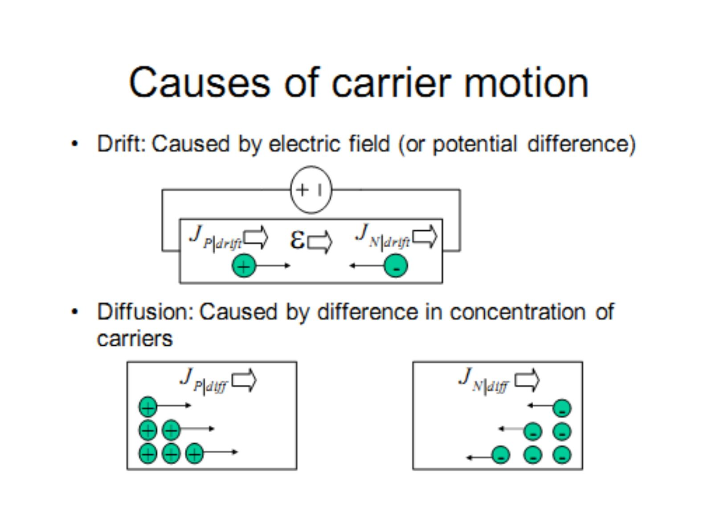
Drift currents
Drift current density:
- J_P|drift = q·μ_p·p·ε for holes
- J_N|drift = q·μ_n·n·ε for electrons
Terminal velocity is reached for high E-fields.
Mobilities
| Material (room temperature) | μ_p | μ_n |
|---|---|---|
| Si (almost pure) | ≈ 460 cm²/V·s (at N_A = 10¹⁴/cm³) | ≈ 1360 cm²/V·s (at N_D = 10¹⁴/cm³) |
| GaAs (high purity) | ≈ 400 cm²/V·s (at N_A ≤ 10¹⁵/cm³) | ≈ 8000 cm²/V·s (at N_D ≤ 10¹⁵/cm³) |
Electrons are faster than holes.
Doping dependence: mobility decreases as a result of increased scattering by ionized impurities. Temperature dependence: for N_D = 10¹⁴ … 10¹⁸ cm⁻³, μ_n falls as T rises from 10² K toward 10³ K; the effect is weaker at heavy doping.
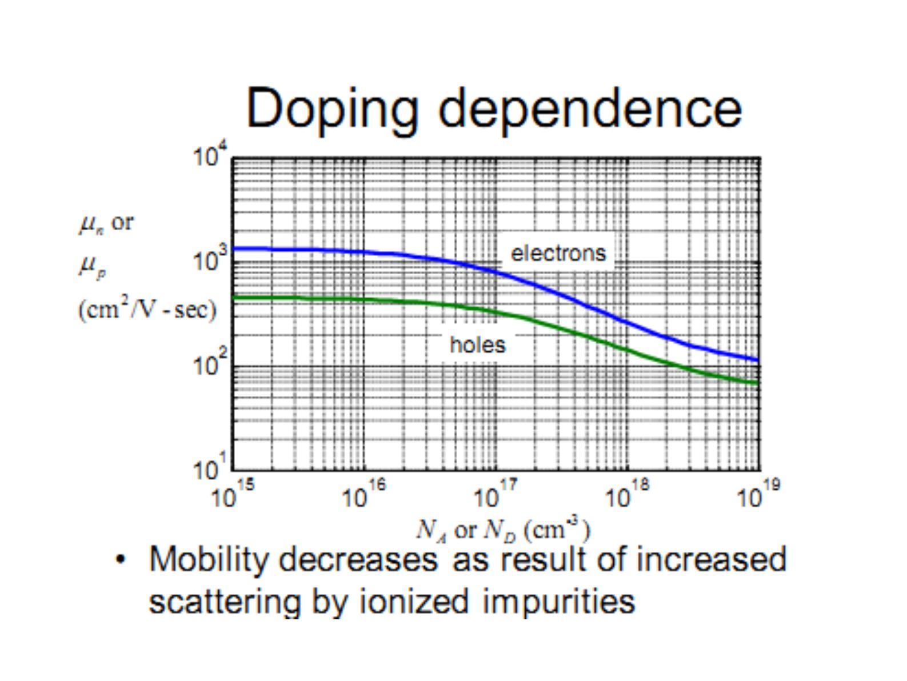
Resistivity and doping
- J = (1/ρ)·ε, ρ = 1 / (q·(μ_n·n + μ_p·p))
- Effect of doping: ρ = 1/(q·μ_n·N_D) for n-type, ρ = 1/(q·μ_p·N_A) for p-type
Diffusion current density
Diffusion is driven by the concentration gradient:
- J_P|diff = −q·D_p·∇p
- J_N|diff = q·D_n·∇n
Einstein relationship (summary)
- D_N/μ_n = kT/q for electrons
- D_P/μ_p = kT/q for holes
Units of diffusion constant: cm²/sec.
Total currents
- J_P = q·μ_p·p·ε − q·D_p·∇p (drift + diffusion)
- J_N = q·μ_n·n·ε + q·D_n·∇n
- J = J_P + J_N
Band bending
With no external voltage E_c and E_v are flat. With an applied voltage the bands tilt: the voltage increases in the direction opposite ε, since ε = −∇V.
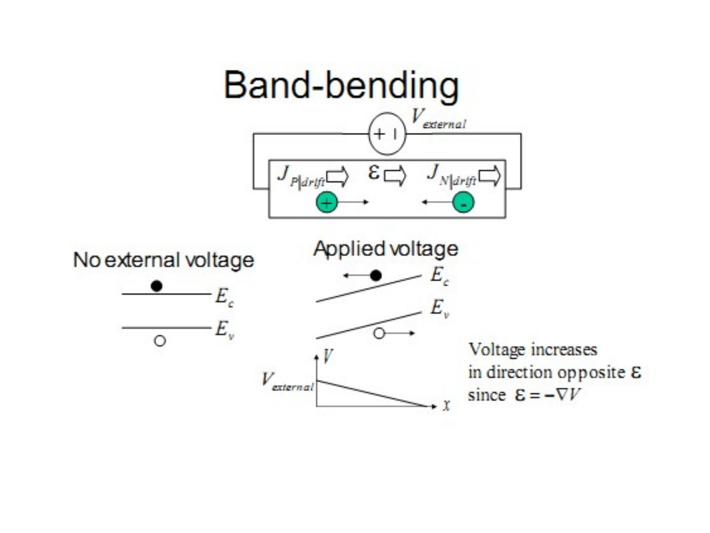
Energy-voltage relationship
The energy diagram is the flipped graph of voltage:
P.E. = −qV = E_c − E_ref
Therefore the electric field is proportional to the slope of the energy diagram:
ε = −∇V = (1/q)·dE_c/dx = (1/q)·dE_v/dx = (1/q)·dE_i/dx
Questions on the slide: sketch the ε of the material with a given band diagram; what is the direction of drift for each of the charge carriers shown?
Depletion region formation
- Before equilibrium, carriers near the junction recombine.
- At equilibrium a depletion region forms; outside it are quasi-neutral regions with negligible ε-field.
- Q: Sketch V(x) using ε = −∇V.
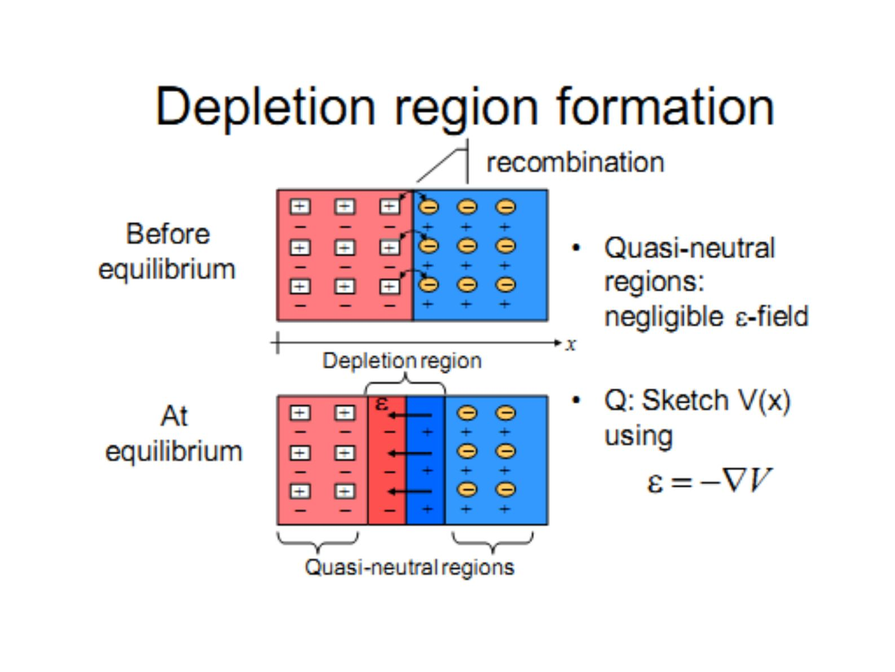
Non-uniform doping
- Electrons diffuse from the high N_D area to the low N_D area …
- The Fermi level equalizes across the material …
- But relative energy levels in each area (far from the junction) remain constant
… which results in band-bending. In equilibrium:
- J_P = q·μ_p·p·ε − q·D_p·∇p = 0
- J_N = q·μ_n·n·ε + q·D_n·∇n = 0
Band bending sets up an electric field stopping further diffusion. (Q: In which direction is the electric field caused by band bending?)
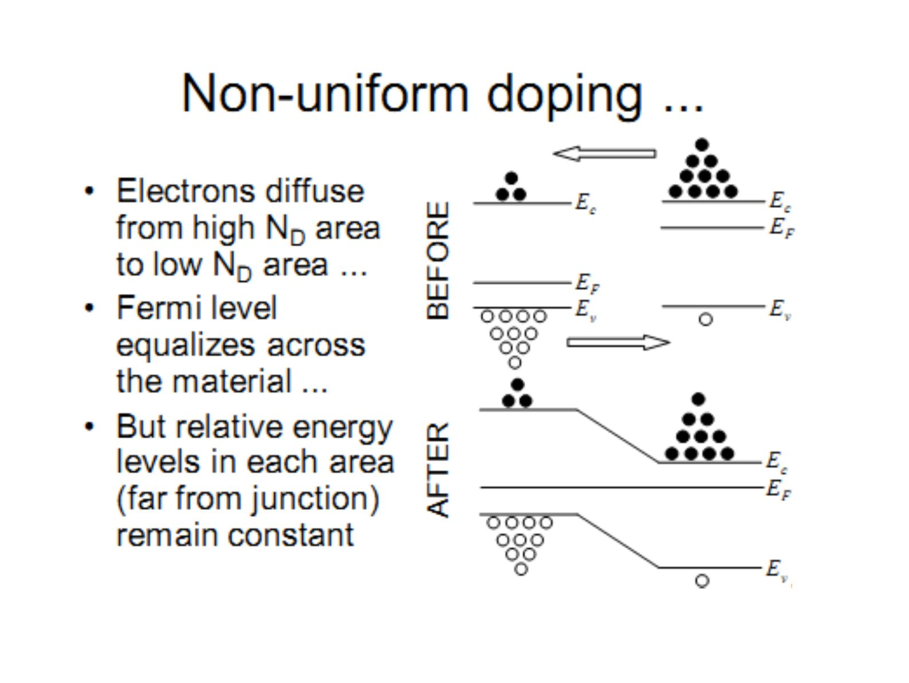
Built-in potential
The internal potential V_j is the sum of the built-in potential V_bi plus any externally applied potential V_d.
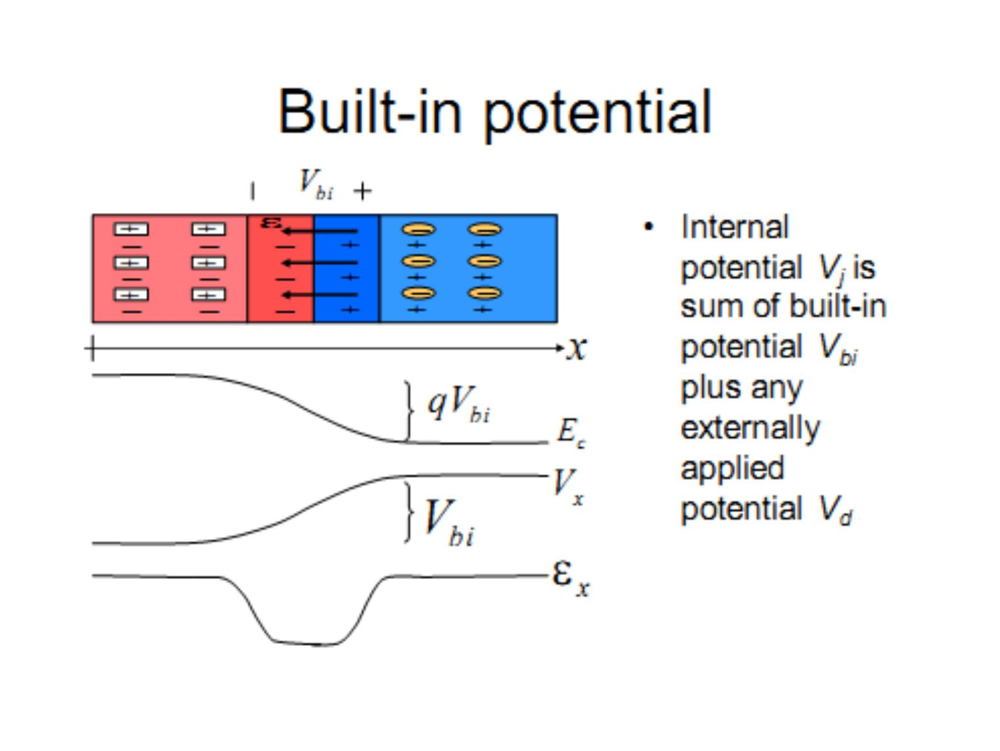
Energy levels are related to charge concentrations by the following equations:
- N_A ≈ p = n_i·e^((E_i − E_F)/kT)
- N_D ≈ n = n_i·e^((E_F − E_i)/kT)
From qV_bi = a + b we get:
V_bi = (kT/q)·ln(N_A·N_D / n_i²)
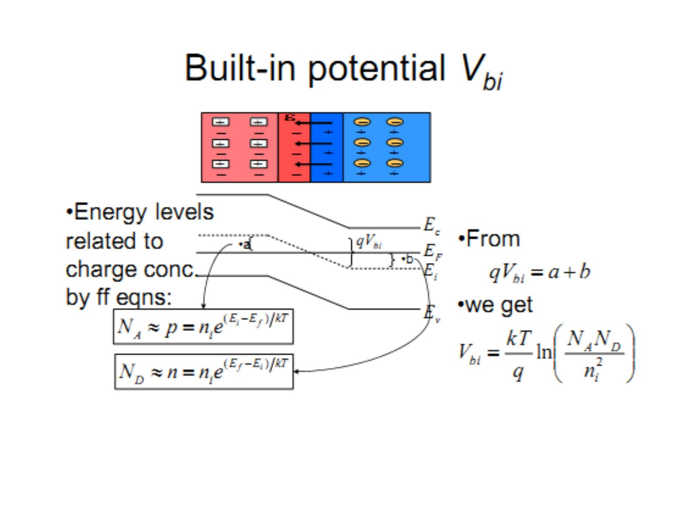
Q: Suppose N_A = N_D = 10¹⁴/cm³ for Si at 300 K. Compute V_bi. Sketch the energy band diagram of the diode. Compute the spacings between E_F and E_i at both ends of the diode.
P-N junction under bias
At V_d = 0, drift and diffusion currents of electrons and holes balance each other.
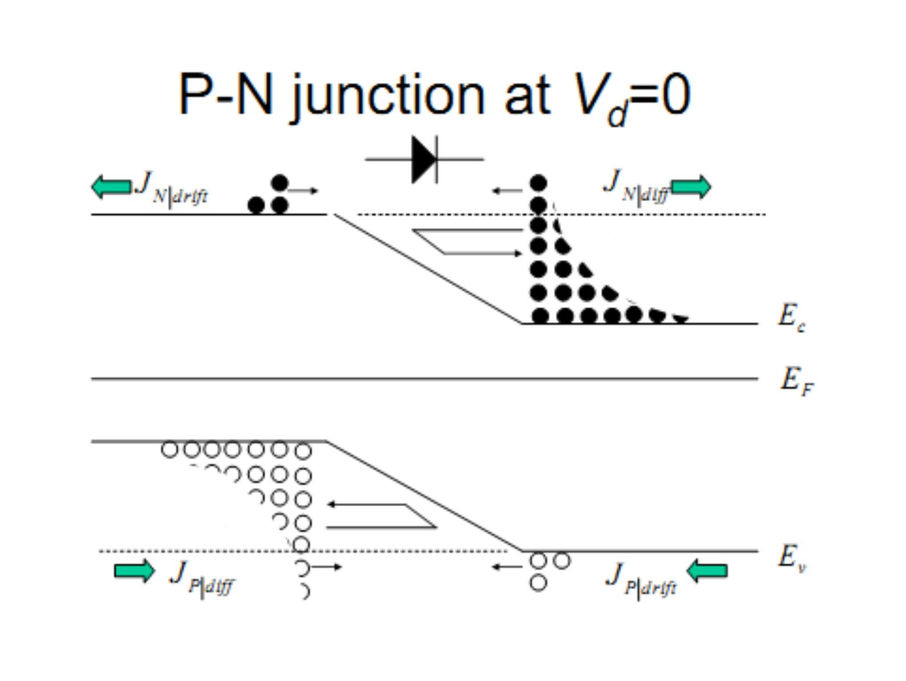
P-N junction electrostatics: the built-in voltage has opposite polarity to V_d. (1) V_d > 0 (2) lowers V_bi to V_j (3) raises E_c to E_c′ by qV_d.
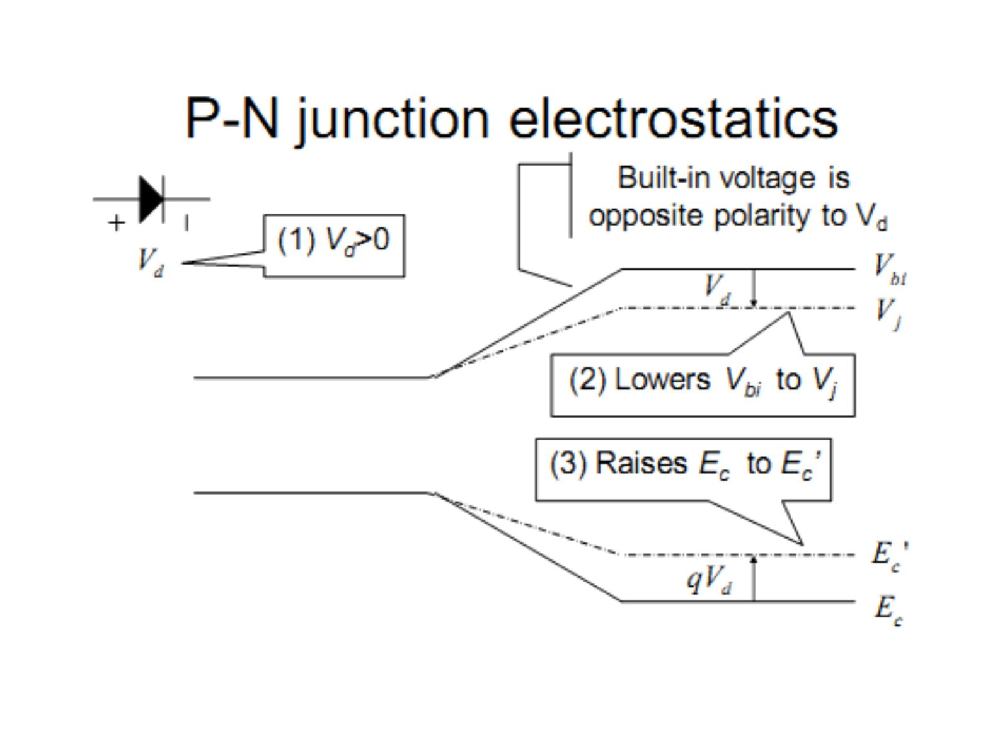
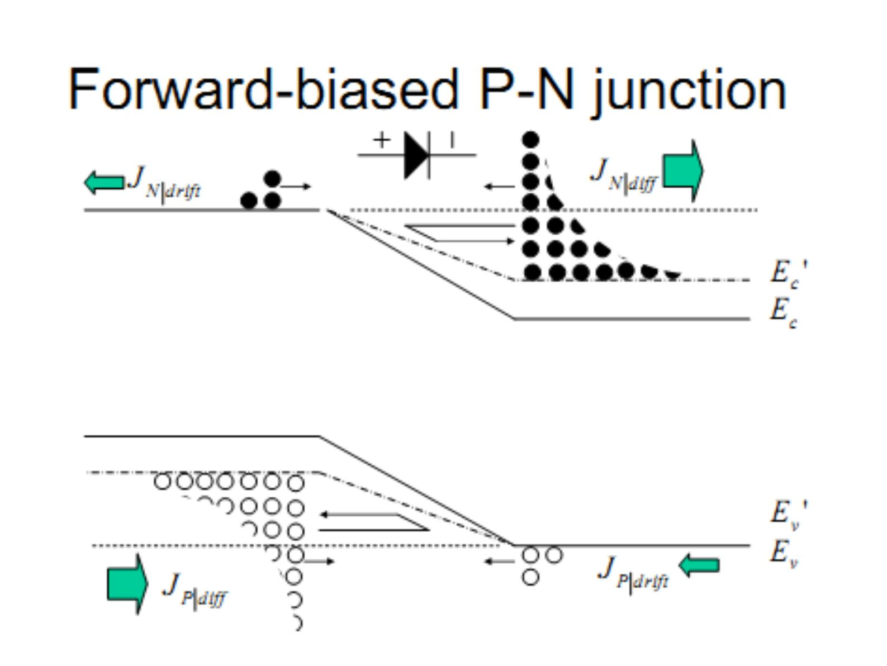
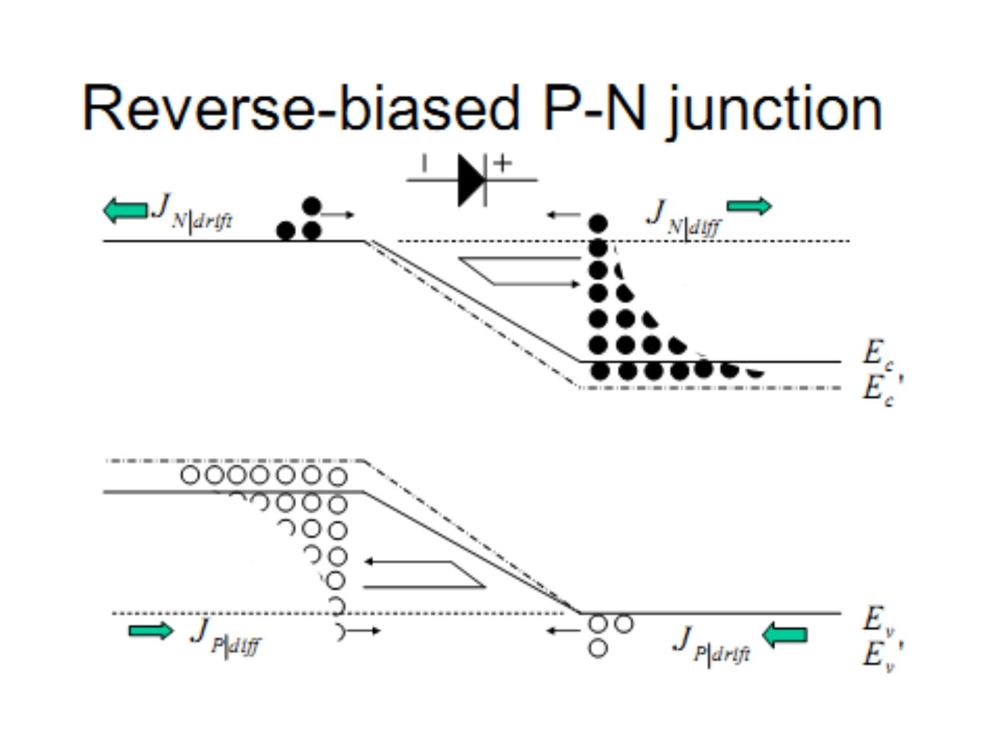
Summary of qualitative diode behavior
- Fermi level no longer flat when net currents flow – use quasi-Fermi levels
- When the diode is forward-biased, "ON" current is mainly diffusion current: electrons diffuse from N to P region, where they become minority carriers; similarly, holes diffuse from P to N …
- Minority carrier diffusion dynamics are important! – leads to the ideal diode equation